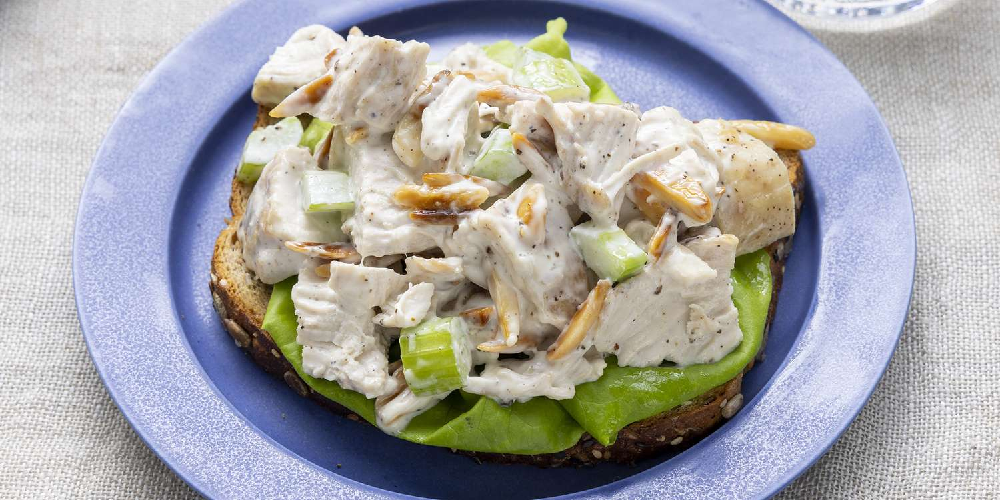

Tommy's Simple Chicken Salad

Simple Chicken Salad for the health conscious
If you're anything like Tommy, you're always thinking of creative ways to consume lots of protein in a tasty, healthy, yet frugal fashion.
This recipe doesn't require a whole lot, contains relatively cheap ingredients, and needs very little preparation.
Despite that, a few key ingredients really make this chicken salad pop.
Personally, I like to put it between lettuce and whole grain bread.
Ingredients
- 1 Costco Canned Chicken
- 1 Stalk of Celery
- 1/2 of a White Onion
- Duke's Mayonaise
- Tarragon
- Apple Cider Vinegar
- Salt & Pepper
- (Optional) Walnuts or Almonds
Steps
- Wash celery thoroughly and ready your cutting board and a large bowl
- Chop your celery as thin as you can and toss them into your bowl
- Dice your onion half and also throw that into your bowl
- Open your Costco canned chicken and strain all of the juices into the sink
- Toss your chicken into the bowl and add a heaping tablespoon of Duke's mayo as well
- Add in about a tablespoon of apple cider vinegar and a teaspoon of salt and pepper
- Sprinkle tarragon generously
- (Optional) If you have walnuts or almonds, grab a handful, chop them up, and then toss them into the bowl as well
- Mix the ingredients together until homogenous *note* you may need to add more mayonaise to ease mixing
- Don't forget to taste when it's all together. Usually there needs to be more salt and pepper as well as vingear
- Enjoy